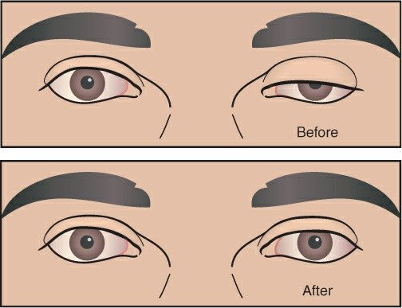

Del nervio al pulgar
Para revisar: aún no está en la app
ConducciónTOFFuerzaReflejos
LCRCV mL · mL/kgPIM cmH₂OK⁺
FCPAHieloSecreciones
Con este K⁺ y la succinilcolina, en la app se abre el ritmo vivo «hiperpotasemia»:
Con estas cifras, en la app se abre el pulmón vivo «debilidad neuromuscular» con la CV y la PIM de este paciente.
Lupa de la placa motora
